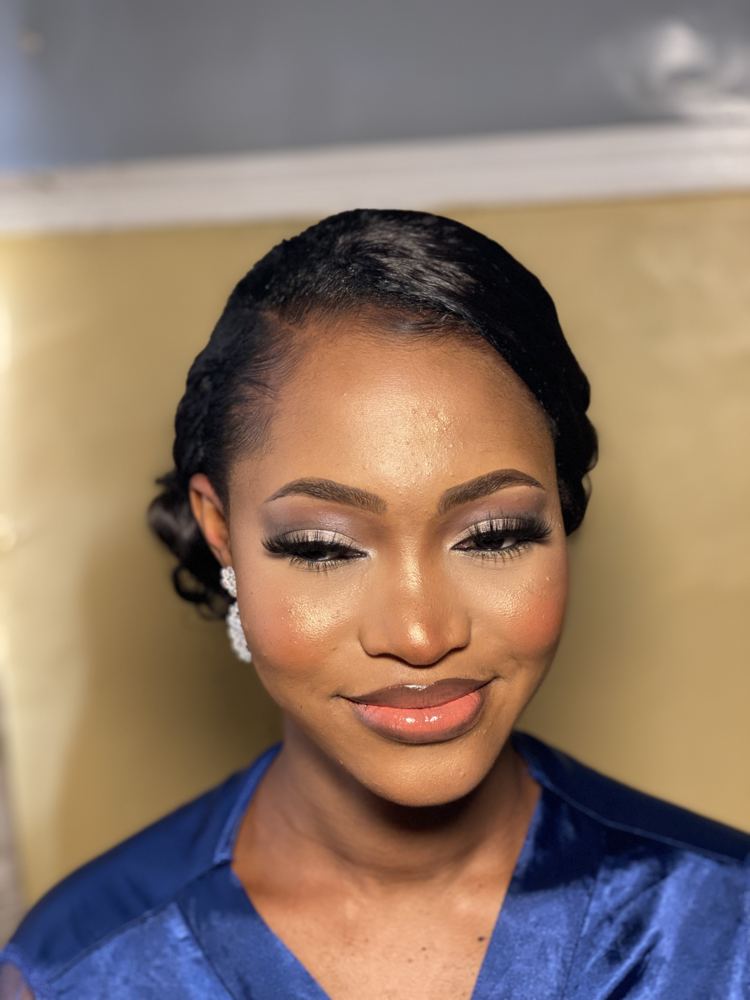
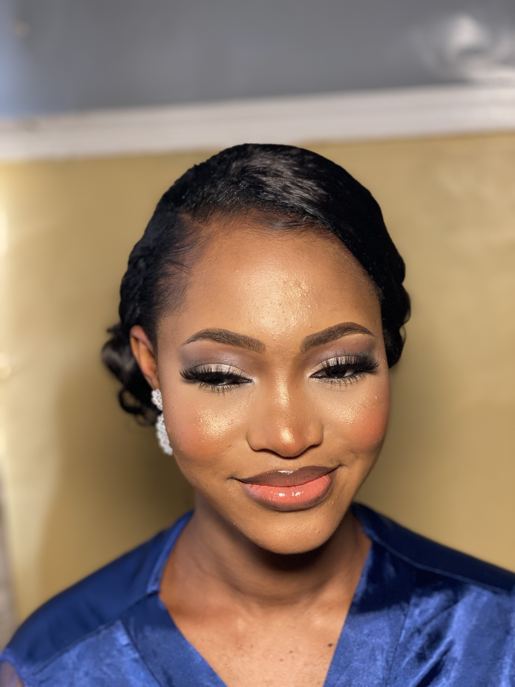

WHAT IS OMIS BRAND ABOUT?
Introdcution: The Omis brand, established in 2015, has become a
symbol of excellence in the digital world. Its primary goal was to
create engaging and visually appealing content for a global audience,
utilizing YouTube as its main platform.
Content Focus: The brand’s content was centered around three main
pillars: beauty, lifestyle, and vlogs. This diverse content strategy
aimed to cater to a wide range of interests and engage a broad audience.
Expansion: BeautybyOmis In 2018, three years after its inception,
Omis launched a new brand extension, BeautybyOmis. This was a dedicated
platform designed to cater to women seeking to enhance their natural
beauty and improve their makeup skills. It was a step towards making
beauty more accessible and empowering women to feel confident and
beautiful.
Brand Motto and Brand Expansion: The brand’s motto, “Bringing
beauty to your screen,” reflects its commitment to making beauty
accessible to everyone, everywhere. In line with this motto, Omis
expanded its offerings by introducing a range of timeless and limitless
jewelries/accessories. These additions have added depth to the brand,
making it a one-stop destination for beauty and lifestyle enthusiasts.
Conclusion: Today, Omis is more than just a brand; it is a
testament to the power of digital innovation and creativity. It
continues to inspire its audience with its commitment to excellence,
constantly evolving to meet their changing needs and preferences. The
journey of Omis is a shining example of how a brand can grow and
flourish while staying true to its core values.
WORK
Omis, a brand that exudes simplicity, beauty, and elegance, has left an
indelible mark in the world of makeup artistry. With a portfolio that
boasts over 20 stunning makeovers, Omis has become synonymous with
understated yet impactful beauty transformations
Recently, Omis achieved a significant milestone by creating her first
bridal makeup look—a momentous occasion for the brand. The bride
radiated confidence and grace, a testament to Omis’s skillful hands and
artistic vision.
 

But Omis’s influence extends beyond makeup alone. Her brand is more than
cosmetics; it’s a statement. It whispers sophistication, yet its impact
resonates loudly. And let’s not forget the way our clients effortlessly
adorn our accessories—each piece a harmonious blend of style and
substance.


In the world of beauty, Omis stands tall, leaving an impression that
lingers like a delicate fragrance—a quiet force that speaks volumes.
üåüüíÑ‚ú®
YouTube
With a good presence across various digital platforms, including an
engaging YouTube channel, Omi offers more than just products; it
provides a lifestyle experience. Through captivating content and
compelling storytelling. the brand invites viewers into its world,
showcasing not only its products but also into the life of the brand
owner.
Omi's YouTube channel serves as a hub of inspiration and connection
for its community. It is one you should check out.
You should check this out: